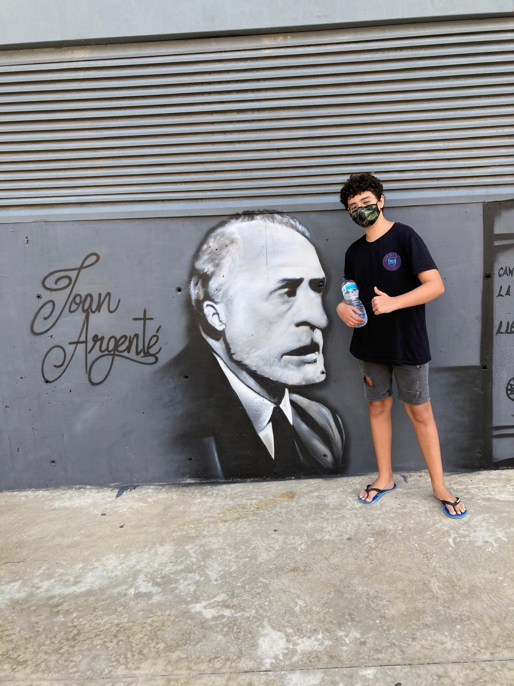
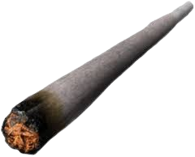

ASI SOY YO
Pablo nació en Badalona en 2002, en una familia española de clase trabajadora. Desde pequeño fue el chico al que miraban por su aspecto: ropa que no seguía la moda, el pelo siempre revuelto, un estilo propio que en el colegio y el instituto se convirtió en motivo de burla. Aprendió pronto a reírse con los demás para que dolieran menos las risas. Terminó la ESO a trancas y barrancas y se sacó el grado medio de SMR (Sistemas Microinformáticos y Redes). No fue un camino de notas brillantes, pero fue el primero que terminó por sí mismo, sin que nadie se lo exigiera. No hizo ninguna carrera universitaria, y en su entorno eso pesa más de lo que debería. Ahora está cursando un grado superior online. Estudia de noche, con el portátil en la mesa y un cigarro en la ventana, un hábito que sabe que no le conviene y que ha intentado dejar más de una vez. Compagina las clases con trabajos sueltos para pagarse sus cosas. Algunos conocidos le llaman “fracasado” porque no fue a la universidad, porque tarda más que otros y porque, según ellos, “no sirve para nada”. Lo que no ven son las prácticas que ha montado él solo, los equipos viejos que ha arreglado a vecinos y familiares, ni las noches en las que entrega una tarea a las tres de la madrugada y a las ocho sigue levantándose. Pablo no tiene todavía un título que enseñar, pero tiene algo que muchos de los que se ríen de él no han probado: la costumbre de seguir adelante cuando nadie aplaude. “Que se rían. Yo ya estoy en el siguiente curso.” — Pablo, en una nota pegada en su monitor.
